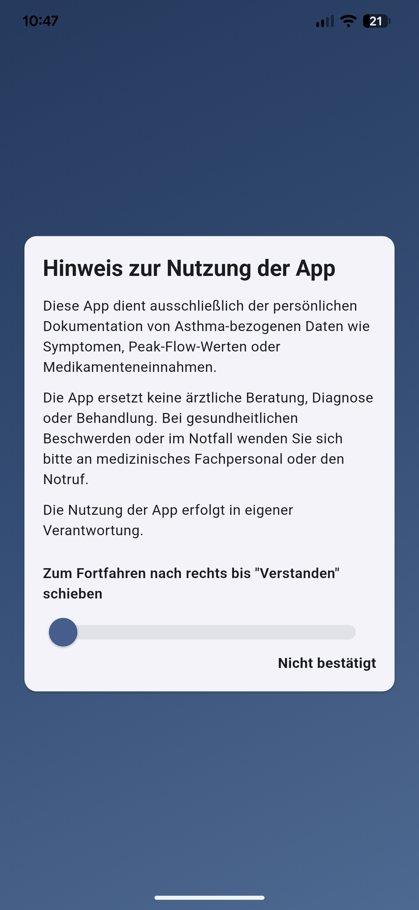
Hinweis zur Nutzung
Applikationen
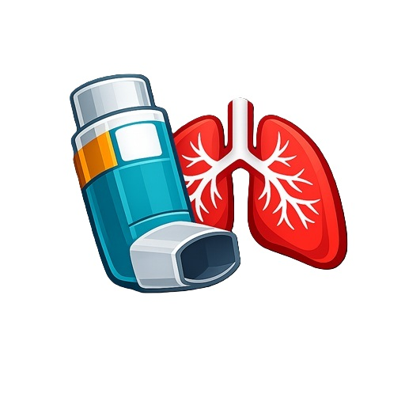
Die App unterstützt bei der persönlichen Dokumentation von Asthma-bezogenen Daten wie Symptomen, Peak-Flow-Werten, Bedarfs- und Dauermedikation sowie individuellen Auslösern und Aktivitäten. Eine Dokumentation Ihrer Eintragungen kann im PDF Format exportiert werden.
Übersichtlich, mobil optimiert für ein schnelles Eintragen Ihrer Werte.
Hintergrund
Entwickelt von einem Notfallsanitäter mit praktischer Erfahrung im Umgang mit Atemwegserkrankungen wie Asthma. Die Idee entstand aus dem Wunsch, Symptome, Peak-Flow-Werte und Medikation übersichtlich und ohne Cloud- und Abo-Zwang zu dokumentieren - einfach, schnell und jederzeit verfügbar.
Screenshots
Galerie

Hinweis zur Nutzung
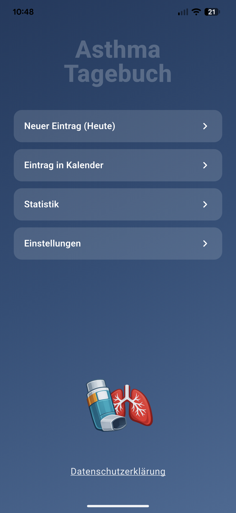
Startseite
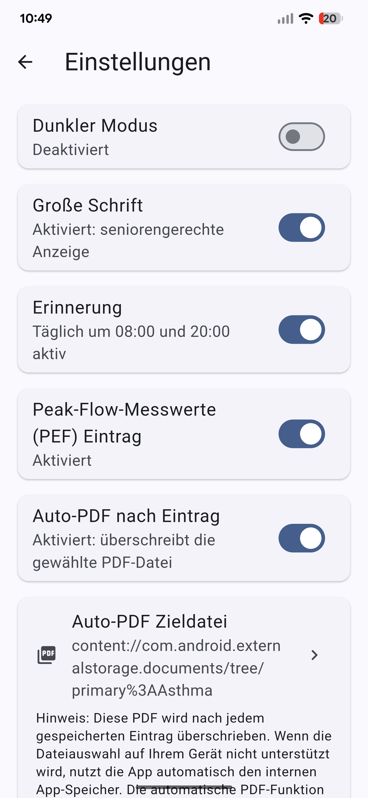
Einstellungen
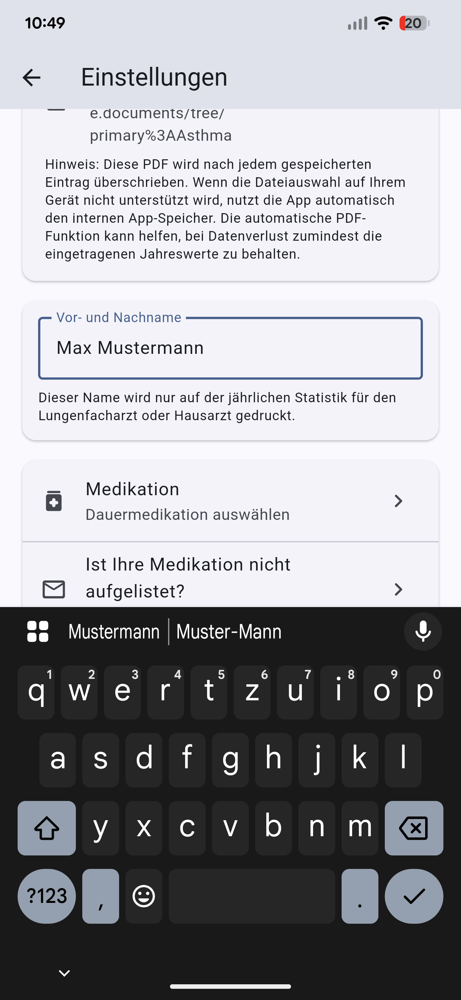
Auto-PDF
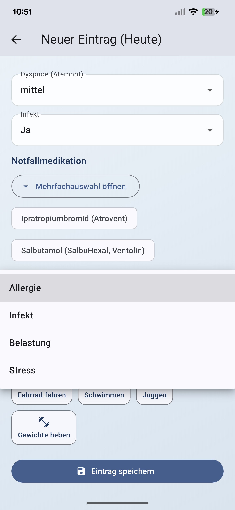
Benachrichtigungen
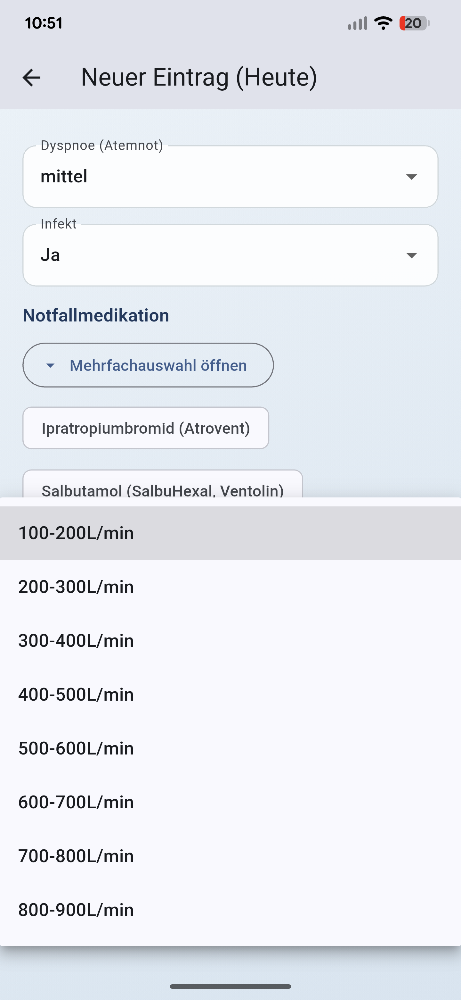
Dauermedikation
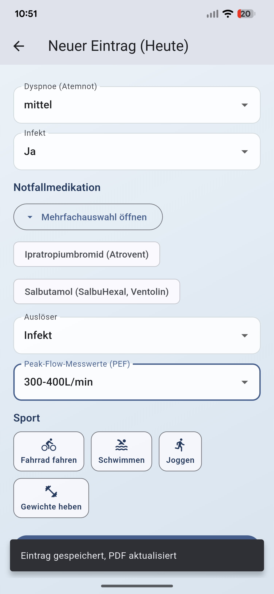
Neuer Eintrag
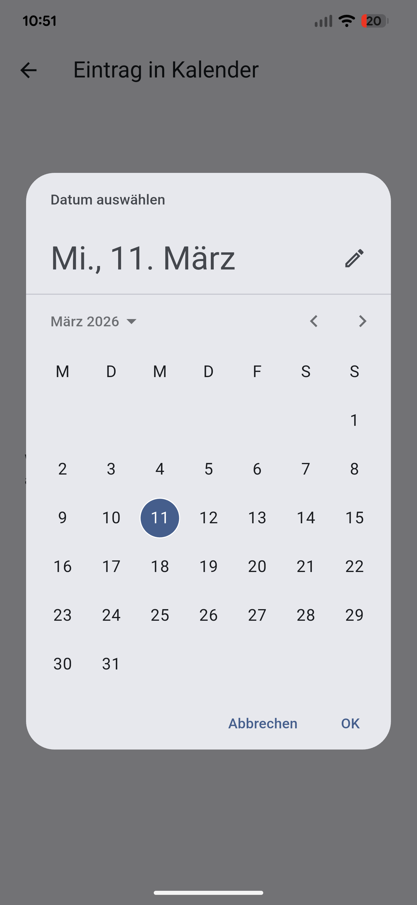
Bedarfsmedikation
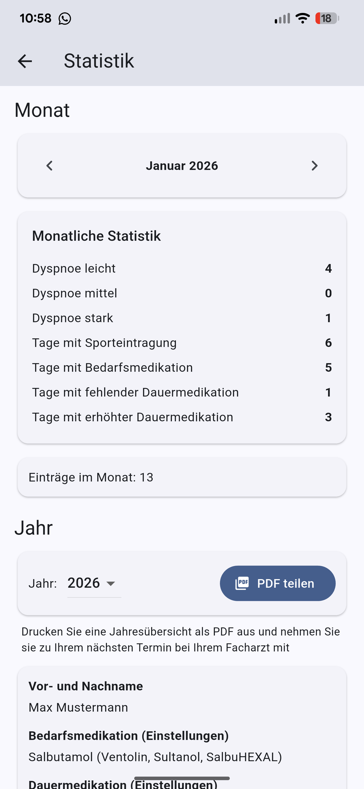
Eintrag gespeichert
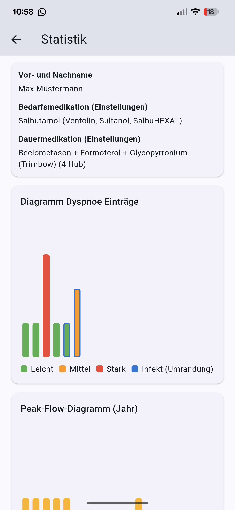
Statistik
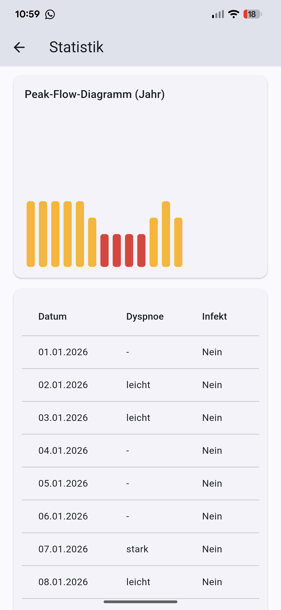
Peak-Flow Diagramm
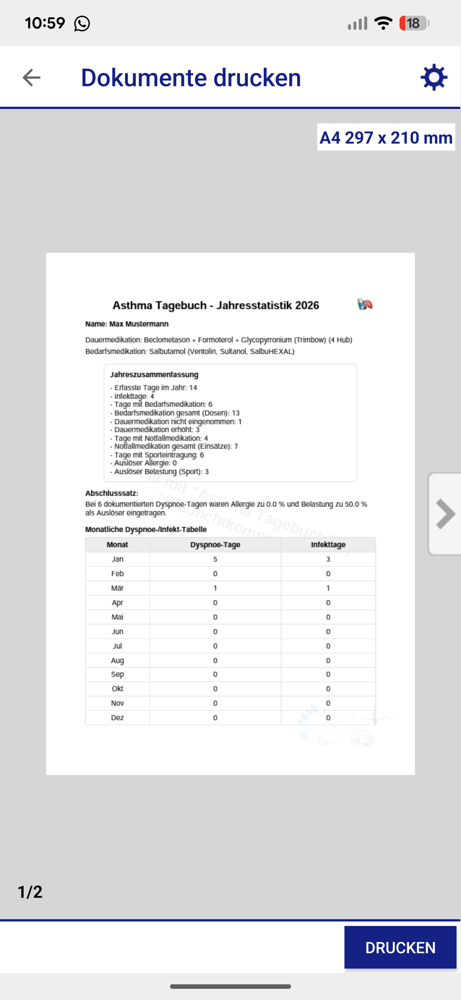
Dokumente drucken
Links
Web App Hinweis
Die Web-App dient zum Testen im Browser und verhält sich teilweise anders als die App auf dem Smartphone unter Android oder iOS.
Je nach Gerät und Browser können Funktionen vereinfacht sein oder sich bei Bedienung, Speicherung und Darstellung anders verhalten.